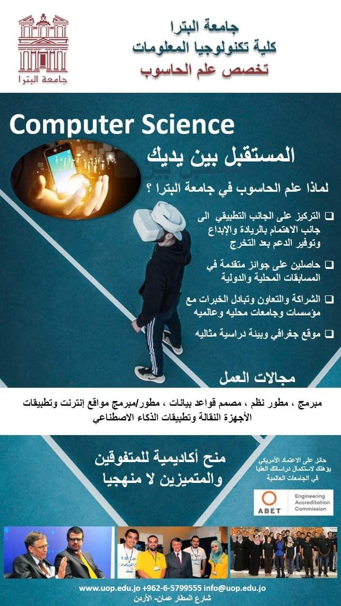

Computer science is the study of computation, information, and automation.[1][2][3] Computer science spans theoretical disciplines (such as algorithms, theory of computation, and information theory) to applied disciplines (including the design and implementation of hardware and software).[4][5][6] Though more often considered an academic discipline, computer science is closely related to computer programming.[7] Algorithms and data structures are central to computer science.[8] The theory of computation concerns abstract models of computation and general classes of problems that can be solved using them. The fields of cryptography and computer security involve studying the means for secure communication and for preventing security vulnerabilities. Computer graphics and computational geometry address the generation of images. Programming language theory considers different ways to describe computational processes, and database theory concerns the management of repositories of data. Human–computer interaction investigates the interfaces through which humans and computers interact, and software engineering focuses on the design and principles behind developing software. Areas such as operating systems, networks and embedded systems investigate the principles and design behind complex systems. Comput
